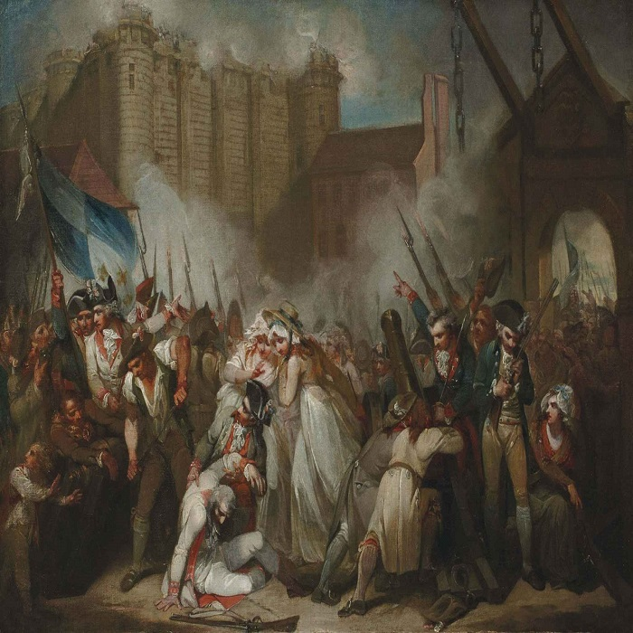

Revolutions
Revolutions have occured many times throughout history. In this site we will examin four of the major revolutions of the modern era.
- The Dutch Revolution which brought the first republic to Europe.
- The French Revoltion and subsequent Napolianic wars which spread the ideas of Enlightment through Europe.
- The American Revolution which led to the Unites States of America developing into a superpower in modern day history.
- The Russian Revolution which put an end to the reign of the Tsars and led to the world's first communist run country.
For further inqueries, comments or corrections please email:
edovyb@gmail.com
Storming of the Bastille, one of the first acts of the French Revolution
